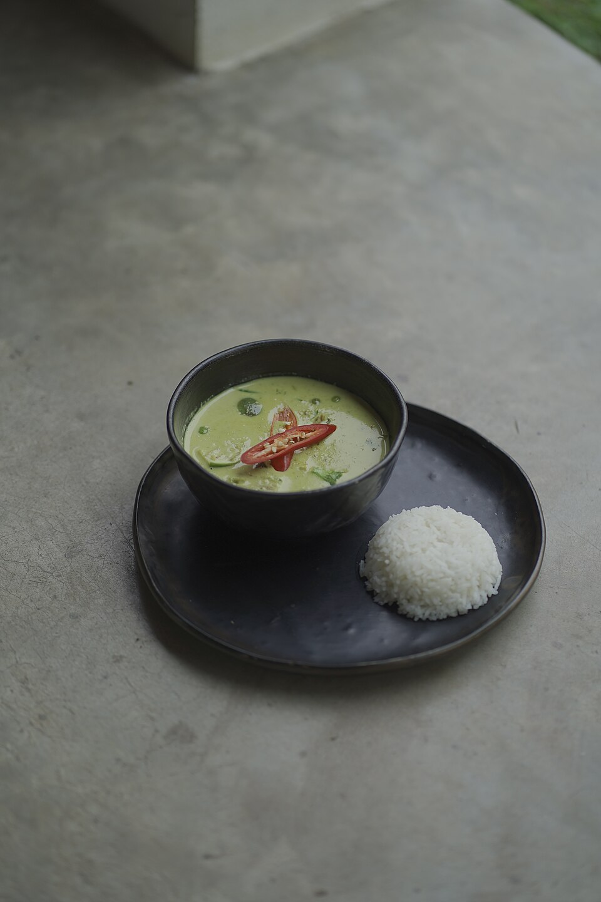

Fresh Herb Aromatics
We never use dehydrated powders. Our curry bases start with fresh galangal root, lemongrass stalks, shallots, garlic, coriander roots, and bruised kaffir lime zest.
In traditional Thai gastronomy, a great curry cannot be rushed or approximated with commercial powders. Since 1995, Thai House has preserved the sacred culinary rituals of Bangkok and Central Thailand: blending fresh aromatics, cracking rich coconut cream to release essential oils, and balancing sweet, salty, spicy, and sour notes in harmonic equilibrium.

How our master chefs maintain 31 years of culinary precision.
We never use dehydrated powders. Our curry bases start with fresh galangal root, lemongrass stalks, shallots, garlic, coriander roots, and bruised kaffir lime zest.
We slowly heat the thick first-press coconut cream in the wok until it breaks into clear natural coconut oil, searing the curry paste to unlock intoxicating aromas.
Operating intense high-output burners, our wok chefs toss rice noodles and meats in seconds, creating slight edge-charring and genuine wok-hei flavor.
While our Green Curry delivers herbaceous brightness and fiery bird's eye chili heat, our Panang offers creamy roasted peanut comfort scented with kaffir lime, and our Southern Masaman introduces warm Persian and Indian trade spices like cinnamon, star anise, and whole cardamom.
Explore Full Curry Menu →